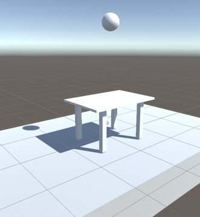
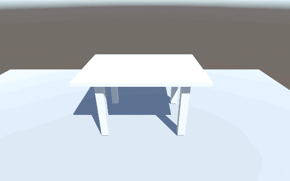
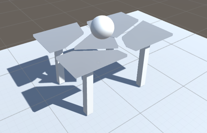
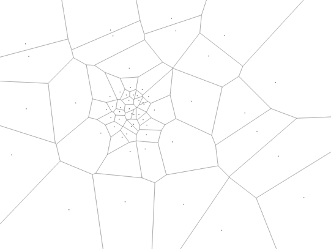

Summary
This project simulates rigid body destruction of a solid object using Voronoi Diagrams. If you consider the pattern generated by the voronoi diagram, you can imagine it resembling that of a fractured or shattered surface.
By creating individual physics bodies for each fragment, we can simulate the destruction of a rigid body.
Project Details
As a Unity Project, our main focus is on the simulation of individual fragments of a body when it collides with a projectile. Our scene comprises of a simple table with four legs. The legs and the table-top are made up of primitive cube objects in Unity.
There is a ball suspended above the table. On running the scene, when the ball hits the table top it create a voronoi diagram and shatters it into several fragments. The original body is replaced with individual cell meshes that are simulated in physical world.
The cell meshes are created procedurally. This is done by triangulating the 2d polygon and adding some depth to each vertex to extend it in the third dimension. We then add a mesh collider to this mesh to help with a physics simulation. One of the most useful properties of a voronoi diagram is that the cells are convex. This helps greatly in simplyfing the simulation as concave polygons are both harder to triangulate and simulate.
Site List
The site list supplied to the algorithm greatly affects the performance and pattern of the shatter. Keep in mind that, although the site list supplied here is fixed, if we choose to supply a different site list, the pattern is going to be very different. This is useful when creating different type of shattering effects. For example: something that’s brittle can have more sites so as to create more shattered fragments. Moreover, based on the point of impact, sites can be packed closer together to create smaller and finer fragment near the collision point.
Fortune's Algorithm
2D voronoi diagrams are created using Fortune’s Algorithm which is an efficient O(n log n) algorithm where n is the total number of sites in the voronoi diagram. Keeping in mind the nature of doubly connected edge list used in this algorithm, I had to come up with my own custom algorithm for connecting the dangling edges. The algorithm was first developed as a seperate project in a console application and then integrated in the main unity project.
Challenges
For me, the biggest challenge was figuring out all the hidden implementation details which were not discussed in any online sources that I could find.
References
- http://alexbeutel.com/webgl/voronoi.html
- http://www.raymondhill.net/voronoi/rhill-voronoi.html
- http://blog.ivank.net/fortunes-algorithm-and-implementation.html
- http://www.ams.org/samplings/feature-column/fcarc-voronoi